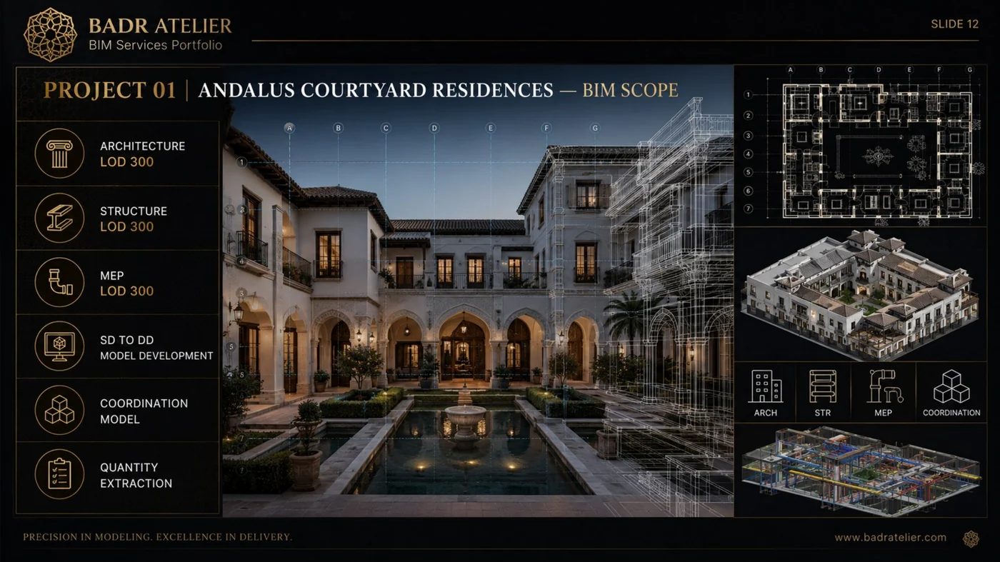
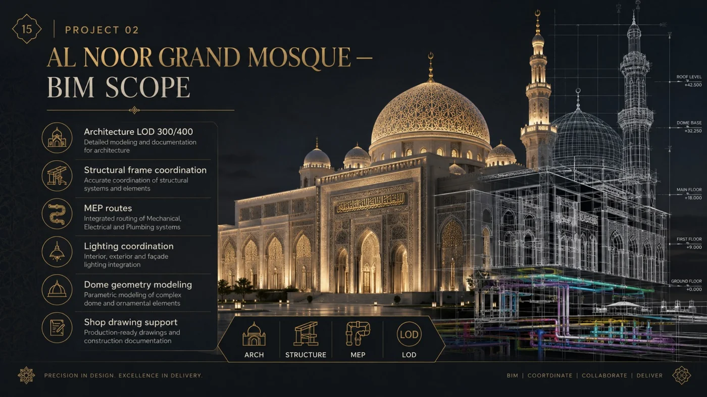
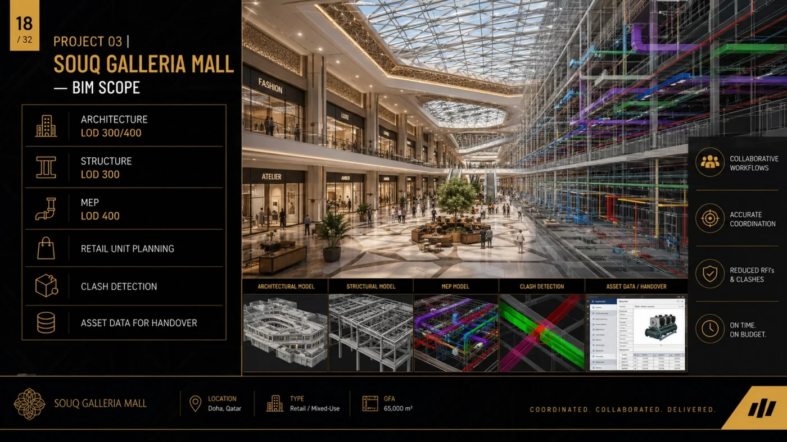
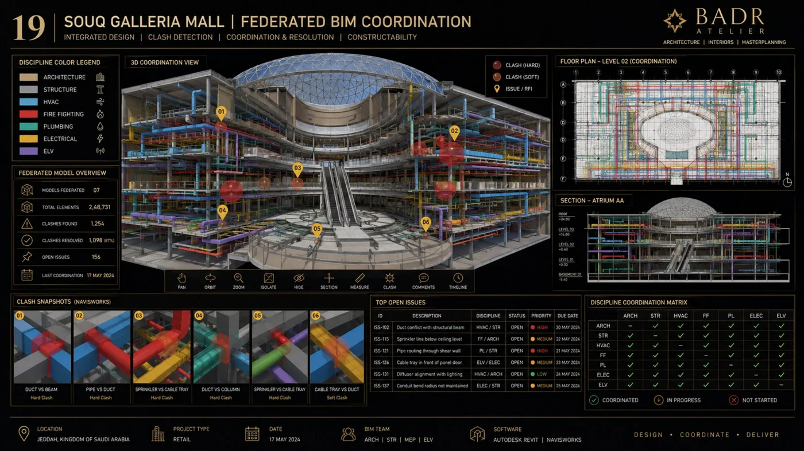
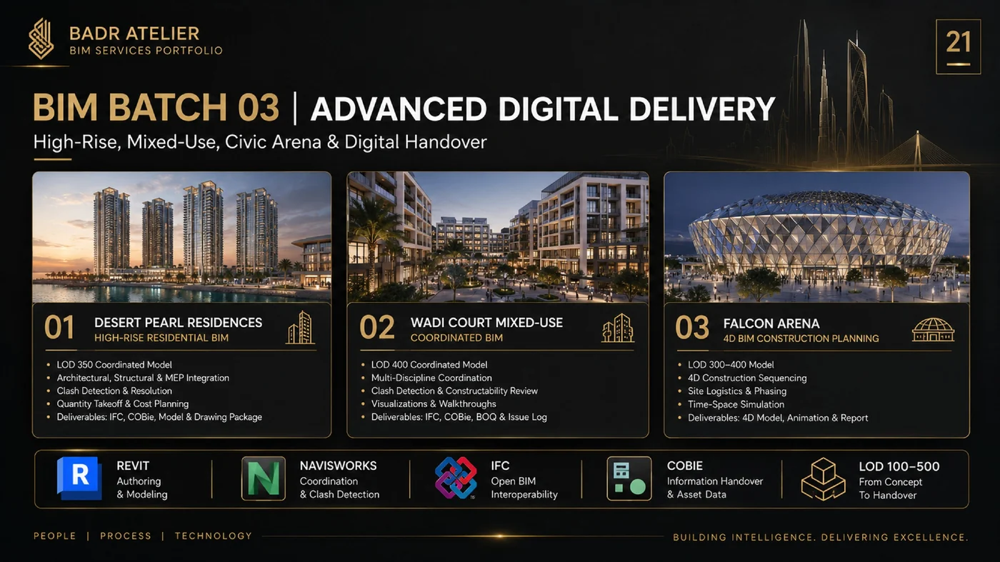
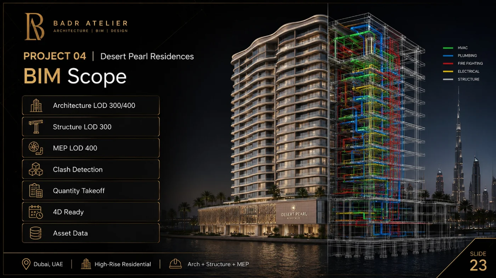
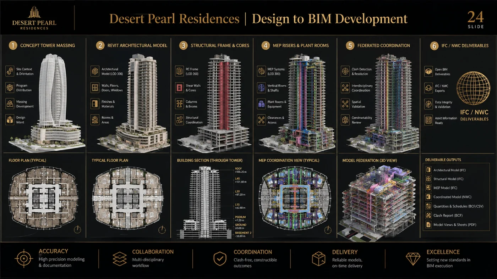
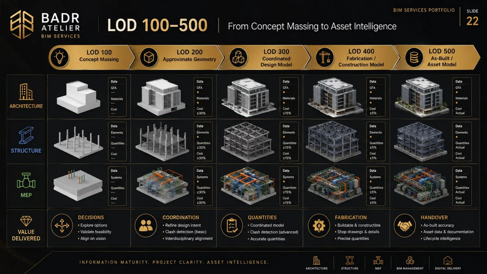

ARCH / STR / MEP
Multidisciplinary Modeling
Structured Revit models developed around coordinated geometry and readable information.
Linked proofAl Noor • Souq Galleria • Desert Pearl
BADR develops Architecture + Structure + MEP as a connected information environment.


We structure geometry, information and multidisciplinary interfaces.
Structured Revit models developed around coordinated geometry and readable information.
A controlled path from concept to construction and asset-ready information.
Federated review, clash testing and issue follow-up.
Model-based schedules and quantities that improve cost transparency.
Sequencing, logistics, phasing and cost-linked model intelligence.
Structured information for testing, handover and operations.
The cards below are drawn from BADR’s BIM services portfolio and routed toward matching project pages or contact paths.

BIM scope + deliverables for a courtyard residential project.
OPEN PROJECT ↗
Architectural geometry, structure and MEP in one coordinated model.
OPEN PROJECT ↗
Retail BIM scope with MEP integration and issue-led coordination.
OPEN PROJECT ↗
Federated-model coordination and early issue visibility.
OPEN PROJECT ↗
Model, schedule, cost visibility and digital handover in one route.
DISCUSS SCOPE ↗
Design-to-BIM development with quantity logic and coordinated deliverables.
OPEN PROJECT ↗
Deliverables, asset information maturity and packaged BIM outputs.
OPEN PROJECT ↗
A clean view of the LOD pathway for model maturity.
DISCUSS SCOPE ↗Architecture, structure, building services and landscape interfaces are coordinated together.